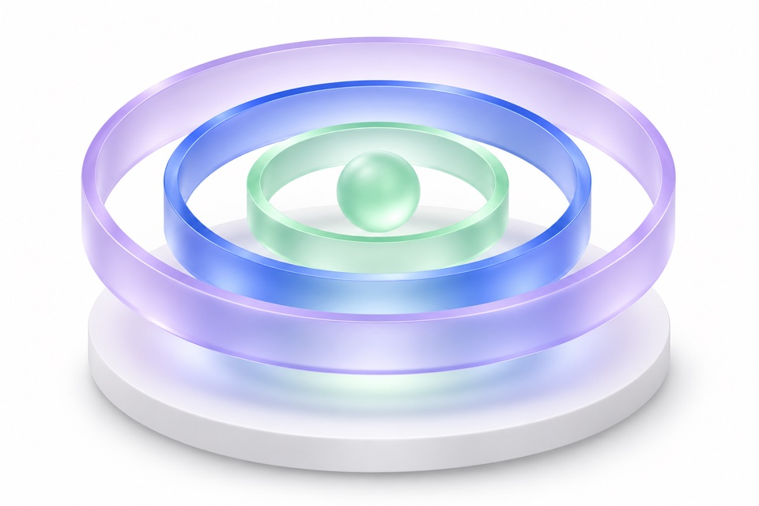
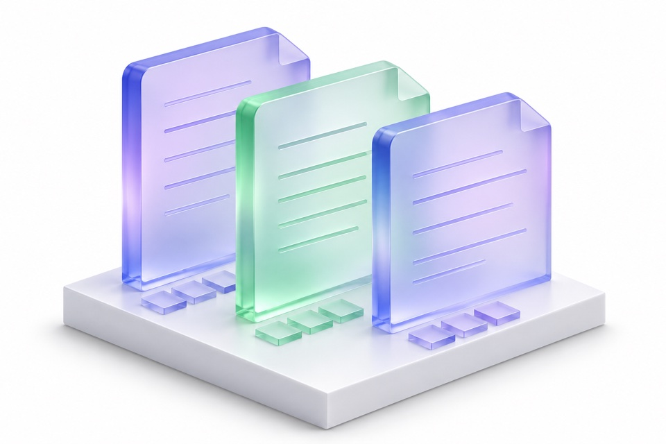

Define the scope
Establish the academic domains and skills the assessment is intended to examine.
ACADEMIC FOUNDATIONA structured framework for examining academic performance and learning gaps across learners, classrooms and institutions.
Elmy is developing and validating this framework. Availability and scope are not yet confirmed.
Conceptual perspectives—not benchmark scores or validated results.
Assessment evidence needs a defined academic scope and a clear basis for interpretation. The proposed framework connects three areas.

Establish the academic domains and skills the assessment is intended to examine.
ACADEMIC FOUNDATION
Develop assessment and reporting methods that make performance patterns available for review.
ASSESSMENT DESIGNExamine learning gaps and areas for further investigation against the institution’s academic priorities.
ACADEMIC INTERPRETATIONThe academic framework and reporting methods remain under development and validation.
Explore the questions the proposed reporting framework is intended to support.
Learner reporting is intended to identify assessed skills and areas to revisit, giving academic teams a more specific basis for reviewing learning needs.
Educator reporting is intended to help examine patterns across a class and identify priorities for teaching and academic support.
Institutional reporting is intended to provide a broader view of assessed performance, helping leaders examine academic priorities and support requirements.
Conceptual reporting perspectives. These are planned capabilities, subject to validation—not product screenshots or measured results.
Assessment design, reporting methods and delivery arrangements are being developed before commercial rollout.
Framework in developmentThe academic scope and assessment framework must provide a basis for interpreting results.
Any future peer comparison or growth reporting depends on the framework, relevant comparison groups and validation work.
Commercial availability, delivery arrangements and participation terms will be confirmed before any commitment.
Existing classroom reports elsewhere on this website do not demonstrate a completed institutional benchmark.
Tell us about your institution and the academic questions you need to examine. You can also indicate interest in a conversation about future validation activities.
Register institutional interestRegistration does not guarantee access, participation or a pilot.